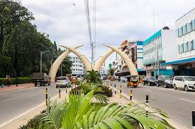

About our company
At Prestige Travel, we ensure that every journey, whether near or far, is crafted with the utmost attention to detail, comfort, and personalized service. Let us take you on a journey that transcends the ordinary, creating memories that will last a lifetime.
DESTINATIONS
-
Nairobi
Nairobi is the capital and largest city of Kenya. The name "Nairobi"Nairobi, Kenya's bustling capital, is a dynamic metropolis where modernity meets tradition, offering an array of experiences that capture the essence of urban life amidst natural beauty. As the largest city in Kenya, Nairobi serves as the gateway to the country's diverse landscapes and wildlife, making it a must-visit destination for travelers seeking both adventure and cultural immersion.
-
Mombasa
Mombasa invites you to explore its unique blend of history, culture, and natural beauty. Whether you're seeking relaxation, adventure, or a journey through time, this coastal gem promises an unforgettable experience
 -
Nakuru
Nakuru, located in Kenya's Great Rift Valley, is a city that combines stunning natural landscapes with rich cultural heritage and vibrant wildlife. Known for its picturesque scenery and diverse ecosystems, Nakuru offers an ideal getaway for nature lovers, adventure seekers, and anyone looking to experience the authentic beauty of Kenya.
-
Nyanyuki
Nyanyuki, located at the equator on the foothills of Mount Kenya, is a charming town that offers a unique blend of adventure, natural beauty, and cultural richness. As a key entry point to some of Kenya's most stunning landscapes and wildlife reserves, Nyanyuki is a must-visit destination for travelers seeking an authentic African experience
-
Kisumu
Kisumu invites visitors to experience its unique blend of lakeside relaxation, cultural richness, and natural beauty. Whether you're exploring the scenic landscapes, engaging with local traditions, or simply enjoying the serene atmosphere, Kisumu offers a memorable and enriching journey.